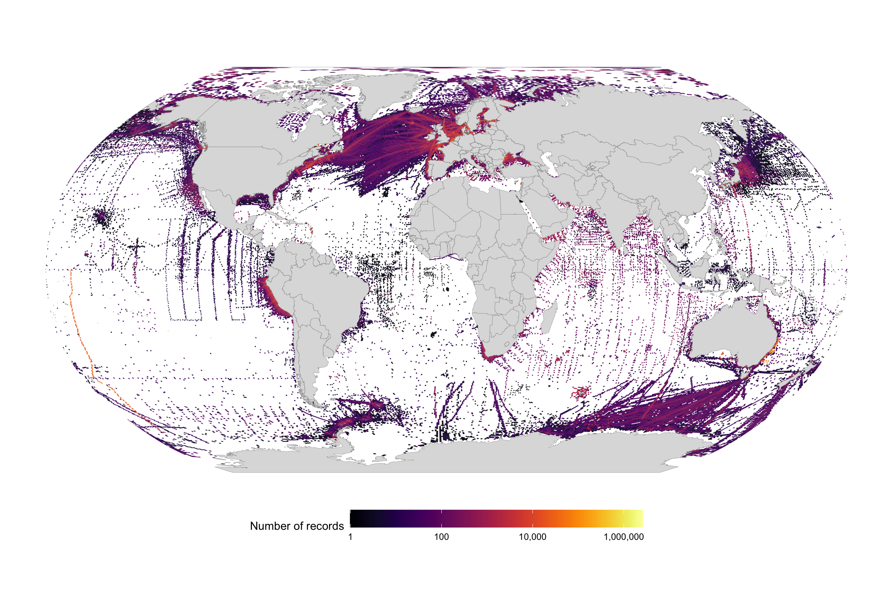

Finding plankton datasets in OBIS is not trivial. Taxa or records are
currently not tagged as being plankton data, so we have to resort to a
text based search on the dataset titles. Besides using the
plankton keyword we use some other terms to ensire that the
largest plankton datasets are all included.
library(robis)
library(dplyr)
library(stringr)
datasets <- dataset()
plankton_datasets <- datasets %>%
filter(
str_detect(title, regex("world ocean database", ignore_case = T)) |
str_detect(title, regex("copepod", ignore_case = T)) |
str_detect(title, regex("krill", ignore_case = T)) |
str_detect(title, regex("ibss historical data", ignore_case = T)) |
str_detect(title, regex("jodc dataset", ignore_case = T)) |
str_detect(title, regex("marine microbes", ignore_case = T)) |
str_detect(title, regex("plankton", ignore_case = T)) |
str_detect(title, regex("cpr.*survey", ignore_case = T))
)This results in the following datasets:
plankton_datasets %>%
select(title, records, node_name, url) %>%
arrange(desc(records)) %>%
rmarkdown::paged_table()For performance reasons we will work with a local copy of the OBIS database. Plankton data are aggregated on a hexagonal grid like this:
library(arrow)
library(h3)
library(h3jsr)
library(sf)
h3_res_map <- 4
row_to_geo <- function(row, res) {
geo_to_h3(c(row$decimalLatitude, row$decimalLongitude), res)
}
cells_map <- open_dataset("~/Desktop/temp/obis_20230726.parquet") %>%
filter(dataset_id %in% plankton_datasets$id) %>%
select(decimalLongitude, decimalLatitude) %>%
group_by(decimalLongitude, decimalLatitude) %>%
summarize(records = n()) %>%
collect() %>%
as.data.frame() %>%
mutate(h3 = row_to_geo(., h3_res_map)) %>%
group_by(h3) %>%
summarize(records = sum(records)) %>%
mutate(geom = cell_to_polygon(h3)) %>%
st_as_sf() %>%
st_wrap_dateline(options = c("WRAPDATELINE=YES", "DATELINEOFFSET=230"))Now create the map:
library(ggplot2)
library(viridis)
library(rnaturalearth)
library(rnaturalearthdata)
world <- ne_countries(scale = "medium", returnclass = "sf")
ggplot() +
geom_sf(data = cells_map, aes_string(fill = "records", color = "records", geometry = "geom"), lwd = 0.04) +
scale_color_viridis(option = "inferno", na.value = "white", name = "Number of records", trans = "log10", guide = "none") +
scale_fill_viridis(option = "inferno", na.value = "white", name = "Number of records", trans = "log10", labels = scales::comma) +
geom_sf(data = world, fill = "#dddddd", color = "#888888", lwd = 0.1) +
theme(
panel.grid.major.x = element_blank(),
panel.grid.major.y = element_blank(),
panel.grid.minor.x = element_blank(),
panel.grid.minor.y = element_blank(),
panel.background = element_blank(),
axis.text.x = element_blank(),
axis.text.y = element_blank(),
axis.ticks = element_blank(),
axis.title.x = element_blank(),
axis.title.y = element_blank(),
legend.position = "bottom",
legend.key.width = unit(2, "cm")
) +
xlab("") + ylab("") +
coord_sf(crs = "+proj=robin +lon_0=0 +x_0=0 +y_0=0 +ellps=WGS84 +datum=WGS84 +units=m +no_defs" )
To calculate plankton data statistics by EEZ, we use a dataset of precalculated H3 grid cells by EEZ. This is based on the Marine Regions EEZ layer.
h3_res <- 7
# aggregate OBIS plankton data by H3 cell
cells <- open_dataset("~/Desktop/temp/obis_20230726.parquet") %>%
filter(dataset_id %in% plankton_datasets$id) %>%
select(decimalLongitude, decimalLatitude) %>%
group_by(decimalLongitude, decimalLatitude) %>%
summarize(records = n()) %>%
collect() %>%
as.data.frame() %>%
mutate(h3 = row_to_geo(., h3_res)) %>%
group_by(h3) %>%
summarize(records = sum(records))
# read EEZ dataset and combine with plankton data
eezs <- open_dataset("eez_h3/eez_h3_res7.parquet") %>%
select(h3 = h3_index, eez = GEONAME) %>%
as.data.frame() %>%
left_join(cells, by = c("h3" = "h3"))
# calculate statistics
eez_stats <- eezs %>%
group_by(eez) %>%
summarize(records = sum(records, na.rm = TRUE)) %>%
arrange(desc(records))
# G7
g7_eezs <- c("Canadian Exclusive Economic Zone", "French Exclusive Economic Zone", "French Guiana Exclusive Economic Zone", "French Polynesian Exclusive Economic Zone", "German Exclusive Economic Zone", "Italian Exclusive Economic Zone", "Japanese Exclusive Economic Zone", "United Kingdom Exclusive Economic Zone", "United States Exclusive Economic Zone", "United States Exclusive Economic Zone (Alaska)", "United States Exclusive Economic Zone (Hawaii)")
eez_stats <- eez_stats %>%
mutate(g7 = eez %in% g7_eezs)
eez_stats %>%
rmarkdown::paged_table(options = list(cols.min.print = 3))